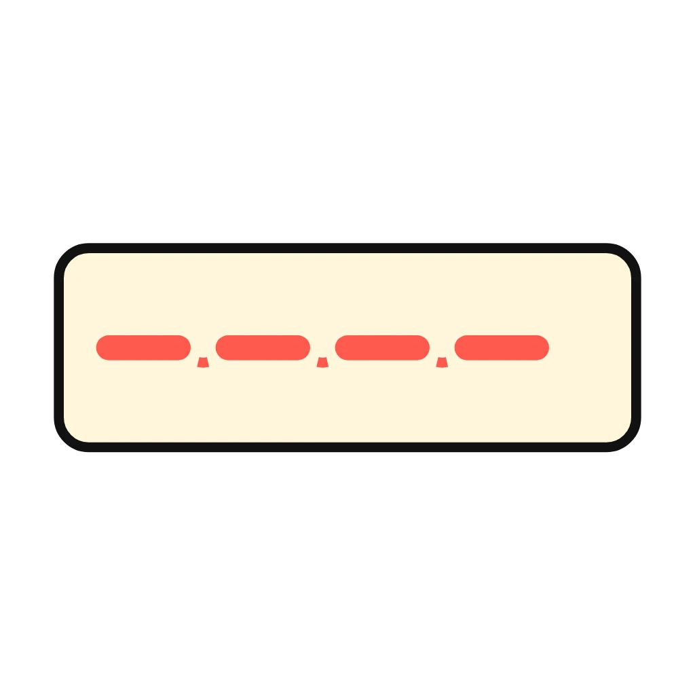
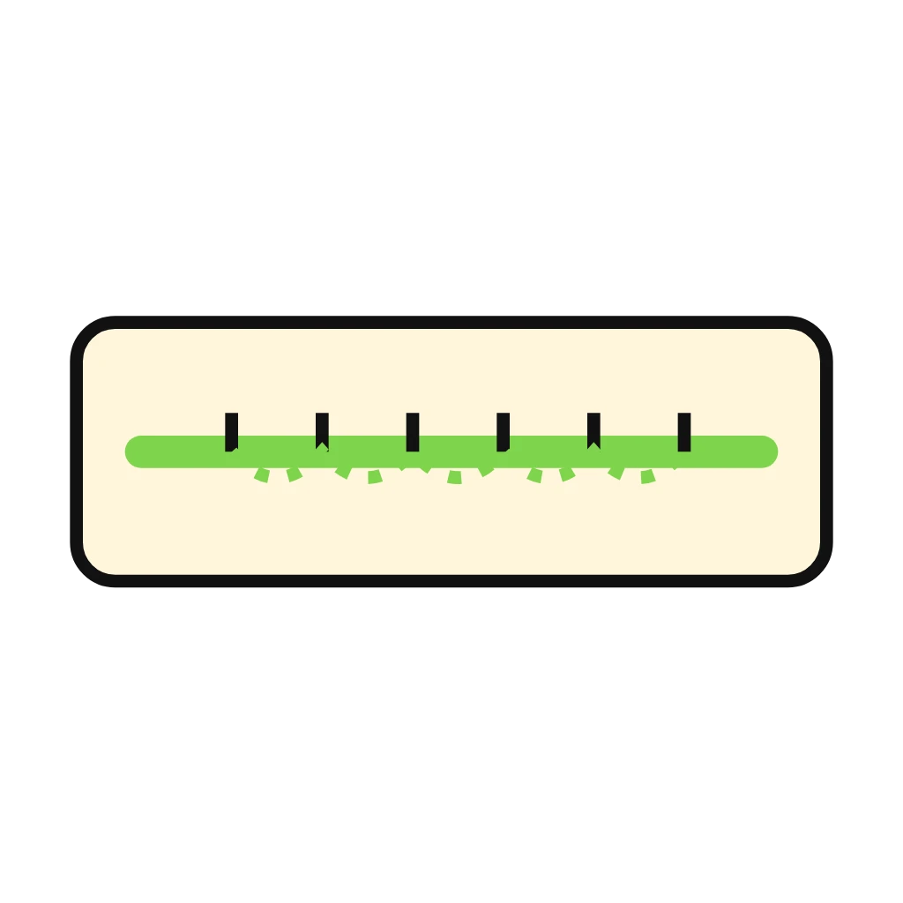
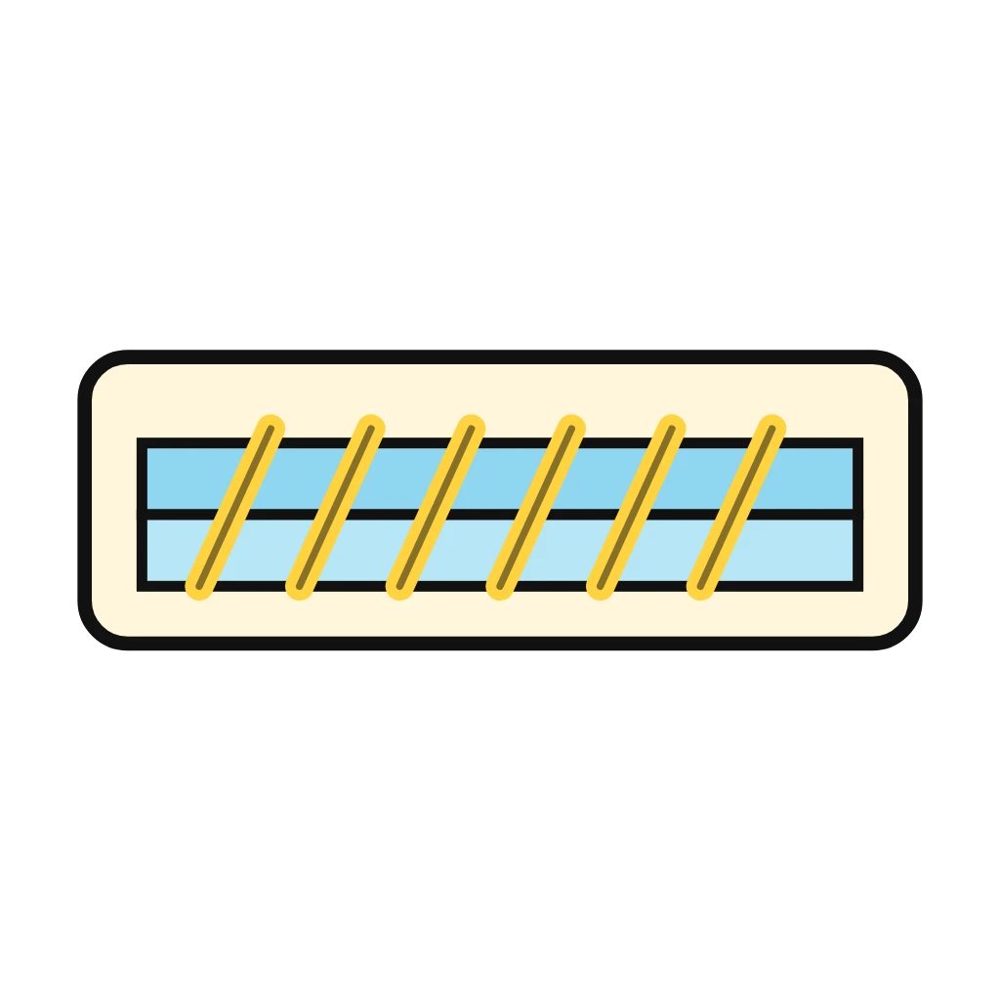
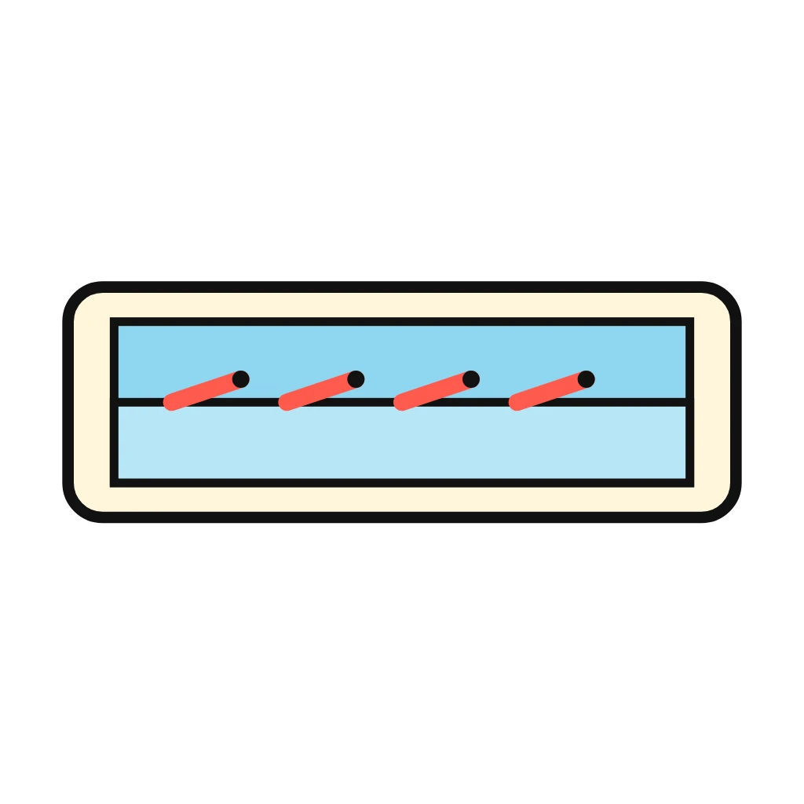

Teacher note
Reviews Lesson 5.6, Lesson 5.9. This game reviews the hand sewing block, Lesson 5.6 to Lesson 5.9: which stitch does which job. Running stitch bastes, gathers, and decorates. Backstitch holds a seam that takes stress. Whipstitch joins two edges and finishes them. Hem stitch holds a fold and stays hidden on the front. Use it as the do now on a sewing day, or as the warm-up before the Stitch Sampler Performance Check in Lesson 5.11. A job that two stitches can do (a patch, for one) accepts both. Nothing is saved when the page closes.

Stitch Match
A job appears. Tap the stitch that does it. Different stitches do different jobs, and picking the wrong one is why things come apart.
How to play
Round 1



